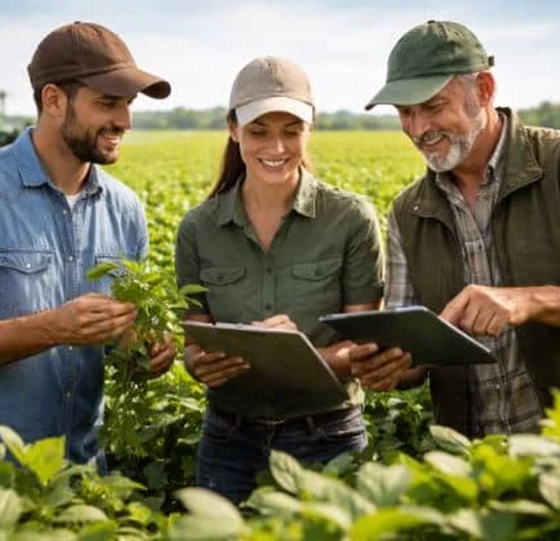
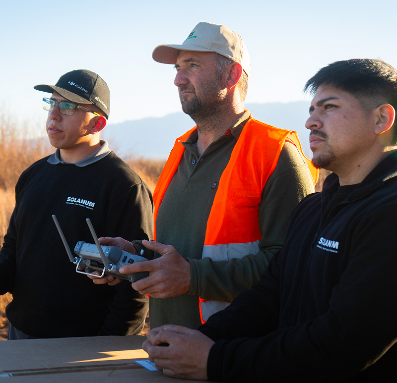

QUIÉNES SOMOS
Cercanía, técnica
y compromiso
con el campo
NUESTRA HISTORIA
Nacimos en 2020 con una idea clara: superar la venta tradicional "por receta" para ofrecer un verdadero acompañamiento técnico al productor.
Fundados por dos ingenieros agrónomos y un empresario, evolucionamos desde la nutrición y protección de cultivos hasta convertirnos en representantes oficiales de tractores Agrochery y drones DJI en la región.

COMO TRABAJAMOS
A la par del
productor, en
cada etapa
Analizamos las condiciones reales de tu terreno para recomendar la estrategia precisa, integrando insumos, maquinaria y tecnología con logística directa en tu finca y soporte técnico oficial permanente.

NUESTRO COMPROMISO
Ser un aliado estratégico
para el productor
Atención
directa
Trato cercano impulsado por los socios y un equipo comprometido en cada proyecto.
Soporte
integral
Asesoramiento técnico continuo antes, durante y después de cada producto.
Eficiencia y
rentabilidad
Insumos y tecnología seleccionados para maximizar los rendimientos de tu cultivo.
Respuesta
inmediata
Disponibilidad logística y asistencia rápida cuando la exigencia del lote lo requiere.
NUESTRA MISIÓN
Brindar soluciones
agronómicas integrales
con resultado medible
 HABLAR CON UN ASESOR
HABLAR CON UN ASESOR
Combinamos insumos de alta eficiencia, maquinaria oficial y tecnología de precisión con asesoramiento profesional, personalizado y constante para la producción de Cuyo.